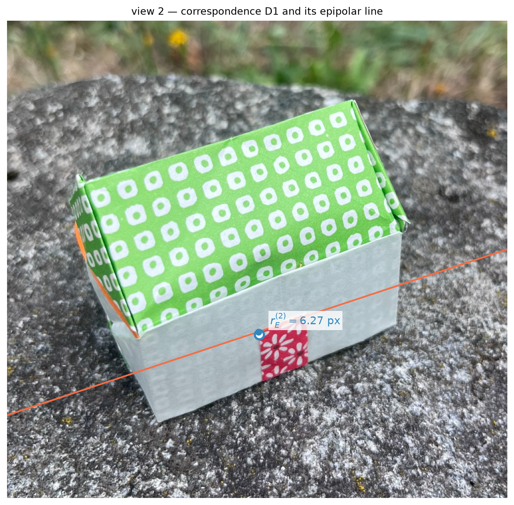
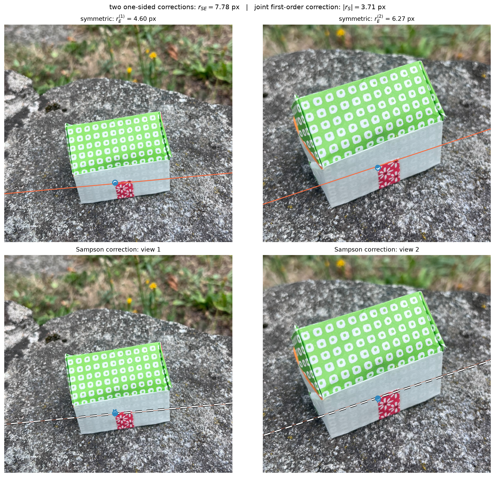
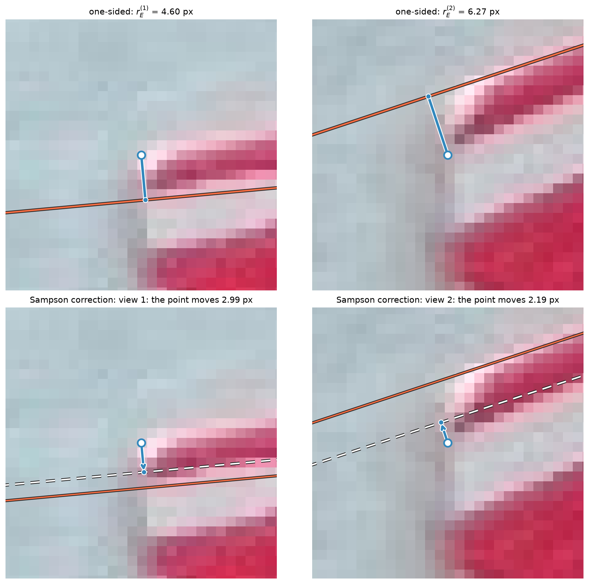
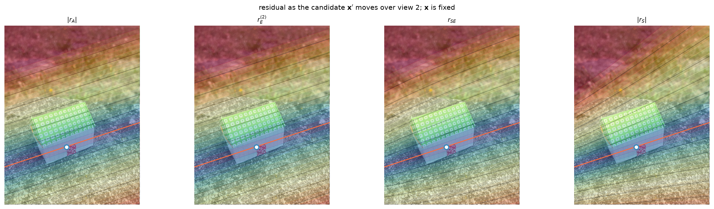
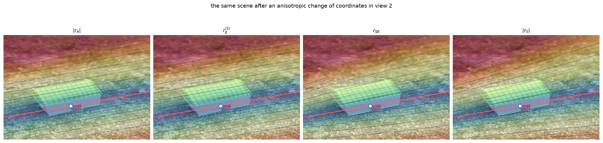
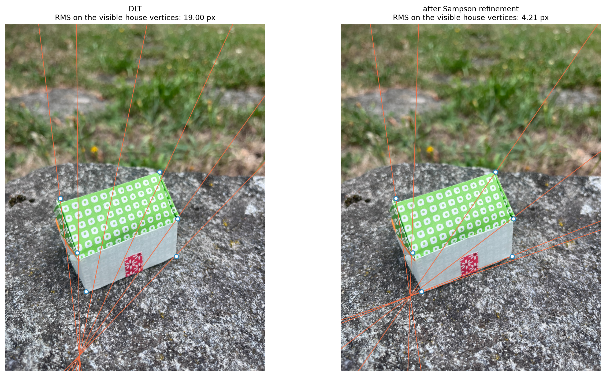
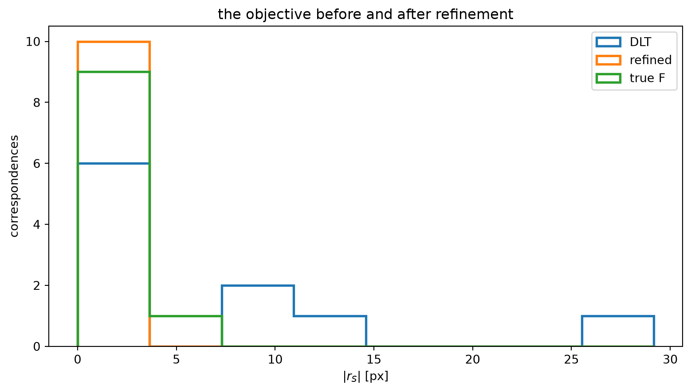
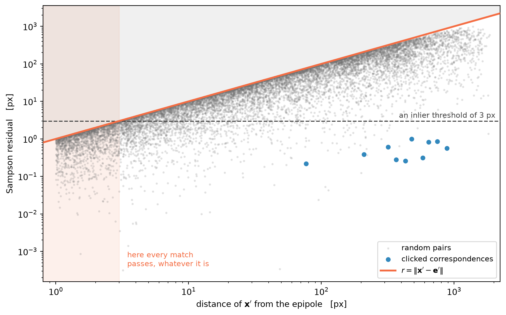

def projective_F_distance(F1, F2):
"""Chordal distance between two projective matrix classes."""
A, B = unit_F(F1), unit_F(F2)
return min(np.linalg.norm(A - B), np.linalg.norm(A + B))
Epipolar residuals
How can we tell whether a fundamental matrix describes the epipolar geometry of a scene well? If the ground-truth fundamental matrix is available, we can normalise the two matrices and compare them directly. A convenient scale- and sign-independent discrepancy is the so-called chordal distance
\[ d_{\mathbb P}(\mathsf F_1,\mathsf F_2) = \min\!\left( \lVert \widehat{\mathsf F}_1-\widehat{\mathsf F}_2\rVert_F, \lVert \widehat{\mathsf F}_1+\widehat{\mathsf F}_2\rVert_F \right), \qquad \widehat{\mathsf F}=\frac{\mathsf F}{\lVert\mathsf F\rVert_F}. \]
But in practice we do not know the ground-truth parameters of the fundamental matrix, and even when we do, this number has no direct interpretation in the image planes. In particular, it does not tell us whether a single correspondence misses its epipolar line or not.
We will therefore introduce the idea of a residual: a number that measures how much one correspondence disagrees with the prescribed epipolar geometry.
There is a second important reason to care about this. The eight-point algorithm is linear because it minimises an algebraic quantity. Once we have a more meaningful image residual, we can minimize that gaining a clearer geometric interpretation.
We will compare four choices: the algebraic residual, a one-sided Euclidean point-to-line residual, the symmetric epipolar residual, and the Sampson residual.
Error in the parameter space
Before moving to image residuals, let us make the matrix comparison above a little more precise.
A fundamental matrix is defined only up to a non-zero scale factor, so its nine entries represent a point of \(\mathbb P^8\), not an ordinary point of \(\mathbb R^9\). After Frobenius normalisation, one projective matrix is represented by two antipodal points on the unit sphere: \(\widehat{\mathsf F}\) and \(-\widehat{\mathsf F}\).
This is why the sign matters in the formula above. The matrices \(\mathsf F\) and \(-\mathsf F\) describe exactly the same epipolar geometry, so we keep the smaller of the two Euclidean distances on the sphere.
matrix_gap = projective_F_distance(F_dlt, F_true)
print("Projective Frobenius distance:", f"{matrix_gap:.5f}")
print("\nAnd now the only question that matters:")
print("what does that number mean in pixels?")Projective Frobenius distance: 0.00141
And now the only question that matters:
what does that number mean in pixels?As anticipated, the chordal distance has two limitations. First, it is unavailable when the ground-truth fundamental matrix is unknown. Second, the entries of \(\mathsf F\) depend on the chosen image coordinate systems, so a discrepancy between matrices is not itself an image-plane distance.
We therefore move to residuals defined directly from \(\mathsf F\) and the measured correspondences.
Four residuals for one epipolar constraint
For a correspondence \((\mathbf x,\mathbf x')\) define
\[ C(\mathbf x,\mathbf x') = \mathbf x'^\top \mathsf F\mathbf x, \qquad \boldsymbol\ell' = \mathsf F\mathbf x, \qquad \boldsymbol\ell = \mathsf F^\top\mathbf x'. \]
The ideal correspondence satisfies \(C=0\). There are several ways of turning a non-zero value into a residual.
Algebraic residual. The most immediate choice is
\[ r_A = \mathbf x'^\top\mathsf F\mathbf x. \]
This is the quantity minimised by the linear DLT inside the eight-point algorithm. It is convenient algebraically, but its scale is arbitrary because \(\mathsf F\) itself is defined only up to scale, and \(r_A\) is not a distance in either image.
def algebraic_residual(F, x, xp):
return np.sum(xp * (F @ x.T).T, axis=1)One-sided Euclidean residual. A more natural idea is to use the epipolar line. If we regard \(\mathbf x\) as exact, the second point should lie on \(\boldsymbol\ell'=\mathsf F\mathbf x\). Its Euclidean distance from that line is
\[ r_E^{(2)} = \frac{|C|}{\sqrt{\ell_1'^2+\ell_2'^2}}. \]
Likewise, if we freeze \(\mathbf x'\) and move only the first point,
\[ r_E^{(1)} = \frac{|C|}{\sqrt{\ell_1^2+\ell_2^2}}. \]
These residuals are measured in pixels, but each of them consider only one image point at time.
def euclidean_epipolar_residuals(F, x, xp):
"""One-sided point-to-epipolar-line residuals in views 1 and 2."""
C = algebraic_residual(F, x, xp)
lp = (F @ x.T).T
l = (F.T @ xp.T).T
np_ = np.maximum(np.linalg.norm(lp[:, :2], axis=1), 1e-15)
n = np.maximum(np.linalg.norm(l[:, :2], axis=1), 1e-15)
rE1 = np.abs(C) / n
rE2 = np.abs(C) / np_
return rE1, rE2
def foot_on_line(p, l):
q = p.copy()
den = l[0]**2 + l[1]**2
q[:2] -= (p @ l) * l[:2] / den
return qSymmetric epipolar residual. We can combine the two one-sided distances,
\[ r_{SE} = \sqrt{\left(r_E^{(1)}\right)^2+\left(r_E^{(2)}\right)^2}. \]
This treats the two views symmetrically. The catch is that each term is evaluated while pretending that the point in the other image is exact. The two perpendicular corrections are therefore not, in general, one jointly consistent correction of the correspondence.
def symmetric_epipolar_residual(F, x, xp):
rE1, rE2 = euclidean_epipolar_residuals(F, x, xp)
return np.hypot(rE1, rE2)Sampson residual. What we would really like is the smallest joint perturbation of both image points that makes the epipolar constraint exact. Sampson replaces that nonlinear problem by its first-order approximation and gives
\[ r_S = \frac{C}{\sqrt{ \ell_1^2+\ell_2^2+\ell_1'^2+\ell_2'^2}}. \]
We keep the sign of \(r_S\) in code because nonlinear least squares wants a residual vector; plots and tables will usually show \(|r_S|\). Squaring it gives the classical Sampson error.
def sampson_residual(F, x, xp):
C = algebraic_residual(F, x, xp)
lp = (F @ x.T).T
l = (F.T @ xp.T).T
J2 = (l[:, 0]**2 + l[:, 1]**2 +
lp[:, 0]**2 + lp[:, 1]**2)
return C / np.sqrt(np.maximum(J2, 1e-30))
def sampson_correction(F, x, xp):
"""Minimum-norm correction satisfying the linearised epipolar constraint."""
C = algebraic_residual(F, x, xp)
lp = (F @ x.T).T
l = (F.T @ xp.T).T
J = np.column_stack([l[:, :2], lp[:, :2]])
J2 = np.sum(J**2, axis=1)
delta = -(C / np.maximum(J2, 1e-30))[:, None] * J
xc, xpc = x.copy(), xp.copy()
xc[:, :2] += delta[:, :2]
xpc[:, :2] += delta[:, 2:]
return xc, xpcDrawing the residuals
The formulas become much easier to read once we draw the residuals directly in the image planes.
First freeze the point \(\mathbf x\) in view 1. In view 2 the fundamental matrix predicts the epipolar line \(\boldsymbol\ell'=\mathsf F\mathbf x\), and \(r_E^{(2)}\) is literally the length of the perpendicular segment from the measured point \(\mathbf x'\) to that line.
One convention, kept in every figure from here on. An orange line is always an epipolar line. A hollow circle is a point we take as given: a match someone clicked, or the exact projection of a vertex whose position we know. A filled dot is where some computation has decided that point ought to be instead. The blue segment between them is the residual we are talking about, drawn to scale.

The symmetric epipolar residual simply draws two such perpendicular segments: one in each image. The top row below shows exactly this construction. Notice that each segment is computed while freezing the point in the other view.
Sampson does something subtler. It lets both points move at the same time and chooses the shortest four-dimensional correction that satisfies the linearised epipolar constraint. The bottom row shows how that joint correction is split between the two image planes.
The bottom row needs two epipolar line per view rather than one. The faint solid line is the epipolar line induced by the measured point in the other view, exactly the same line as in the panel above it. The dashed line is the line induced by that point after Sampson has corrected it. Since both points move, the line each of them has to meet moves too, and the dashed line is where it ended up. The blue arrow is the correction itself, and the filled dot at its tip is the corrected point.
Now look at whether the tip of the arrow actually lands on the dashed line. It very nearly does, but not exactly: the corrected pair need not satisfy the nonlinear epipolar constraint, because Sampson solves the tangent problem and not the original one. The mismatch that remains is precisely the price of the first-order approximation, and, as the next cell shows, on this data it is far too small to see at this scale, which is itself the reason the approximation is worth making.
This distinction is the reason Sampson is not just a different normalisation of a point-to-line distance. It changes how the correction is distributed between the two measurements.


It is worth pausing again on what changes between the two rows.
In the top row we reason one view at a time. The point in the other view is held fixed, so the epipolar line it induces is fixed too, and the question has an elementary answer: how far must this point travel to reach that line? That is \(r_E^{(1)}\) on the left and \(r_E^{(2)}\) on the right, and the two are computed independently of each other.
In the bottom row we reason jointly, and the lines are no longer fixed, because they depend on the points. Moving a point in one view swings the epipolar line it induces in the other. that is why each panel now carries two orange lines, the faint solid one from the measured partner and the white dashed one from the corrected partner. So the question becomes: how far must both points move, together, for the pair to satisfy the epipolar constraint? The two displacements are shorter than the one-sided residuals, and their target is a line that has moved to meet them halfway.
xc1, xpc1 = sampson_correction(F_true, x0[None, :], xp0[None, :])
before = abs(algebraic_residual(F_true, x0[None, :], xp0[None, :])[0])
after = abs(algebraic_residual(F_true, xc1, xpc1)[0])
print(f"epipolar constraint, before the correction: {before:.3e}")
print(f" after one Sampson step: {after:.3e}")
l1c = F_true.T @ xpc1[0]
gap = abs(xc1[0] @ l1c) / np.linalg.norm(l1c[:2])
print(f"\ndistance of the corrected point from the dashed line: {gap:.2e} px")epipolar constraint, before the correction: 5.817e-03
after one Sampson step: 5.485e-08
distance of the corrected point from the dashed line: 4.34e-05 pxThe constraint drops by several orders of magnitude in one step, and the leftover gap is a small fraction of a pixel. One linear step does not land exactly on a curved surface — it just lands close enough that nobody minds.
print(f"{'matrix':16s}{'r_A RMS':>13s}{'r_E^(2) RMS [px]':>19s}{'r_SE RMS [px]':>16s}{'r_S RMS [px]':>15s}")
for name, F in [("DLT", F_dlt), ("true F", F_true)]:
rA = algebraic_residual(unit_F(F), xr, xpr)
_, rE2 = euclidean_epipolar_residuals(F, xr, xpr)
rSE = symmetric_epipolar_residual(F, xr, xpr)
rS = sampson_residual(F, xr, xpr)
print(f"{name:16s}{np.sqrt(np.mean(rA**2)):13.3e}"
f"{np.sqrt(np.mean(rE2**2)):19.3f}"
f"{np.sqrt(np.mean(rSE**2)):16.3f}"
f"{np.sqrt(np.mean(rS**2)):15.3f}")matrix r_A RMS r_E^(2) RMS [px] r_SE RMS [px] r_S RMS [px]
DLT 8.054e-03 16.432 21.866 10.808
true F 2.638e-03 2.698 3.349 1.597The last three columns show how well the estimated fundamental matrix is fitted to the correspondences in the units of the data: pixels.
The first column is deliberately left in the table as a warning. We normalised \(\mathsf F\) before computing \(r_A\), so the numbers are comparable inside this cell, but the unit is still an arbitrary convention rather than a physical image distance.
Where does the Sampson formula come from?
The derivation is just the minimum-norm solution of one linearised constraint.
Write the four measured image coordinates as
\[ \mathbf z=(u,v,u',v')^\top \in \mathbb R^4, \qquad C(\mathbf z)=\mathbf x'^\top\mathsf F\mathbf x . \]
It is worth pausing on the shapes. The measurement lives in \(\mathbb R^4\), but the constraint is a single scalar equation, so \(C:\mathbb R^4\to\mathbb R\) and its Jacobian is a \(1\times4\) row vector.
We would like to find the smallest correction \(\Delta\mathbf z\) such that the corrected correspondence satisfies \(C=0\). Sampson replaces the nonlinear constraint by its first-order Taylor expansion,
\[ C(\mathbf z+\Delta\mathbf z) \simeq C(\mathbf z)+\mathsf J\,\Delta\mathbf z = 0 . \]
The four partial derivatives are immediate, because \(C\) is bilinear. Differentiating with respect to \(u\) only touches \(\mathbf x=(u,v,1)^\top\), so
\[ \frac{\partial C}{\partial u} =\mathbf x'^\top\mathsf F\,\mathbf e_1 =\left(\mathsf F^\top\mathbf x'\right)_1 =\ell_1 , \]
and in the same way \(\partial C/\partial v=\ell_2\), while differentiating in \(u'\) and \(v'\) touches only \(\mathbf x'\) and gives \(\ell'_1\) and \(\ell'_2\). Hence
\[ \mathsf J = \begin{bmatrix} \ell_1 & \ell_2 & \ell'_1 & \ell'_2 \end{bmatrix} \in\mathbb R^{1\times4}. \]
So the gradient of the epipolar constraint is nothing but the two epipolar lines, stacked, with their homogeneous third coordinates dropped. The two entries acting on view 1 come from the line \(\boldsymbol\ell\) that lives in view 1, and the other two from \(\boldsymbol\ell'\) in view 2.
So we solve
\[ \min_{\Delta\mathbf z}\ \lVert\Delta\mathbf z\rVert^2 \qquad\text{subject to}\qquad \mathsf J\Delta\mathbf z=-C. \]
Because there is only one scalar constraint, \(\mathsf J\mathsf J^\top\) is a \(1\times1\) matrix — a number — and the minimum-norm solution needs no matrix inverse at all:
\[ \Delta\mathbf z =-\frac{C}{\mathsf J\mathsf J^\top}\,\mathsf J^\top \in\mathbb R^4 . \]
With \(N\) independent constraints the same derivation goes through with \(\mathsf J\in\mathbb R^{N\times n}\), but \(\mathsf J\mathsf J^\top\) becomes an \(N\times N\) matrix that has to be inverted. That is where the multi-view case starts to get interesting.
Taking its norm gives
\[ \lVert\Delta\mathbf z\rVert = \frac{|C|}{\sqrt{\mathsf J\mathsf J^\top}} = \frac{|C|}{\sqrt{\ell_1^2+\ell_2^2+\ell_1'^2+\ell_2'^2}} =|r_S|. \]
That is the whole Sampson approximation: linearise the constraint, then take the shortest correction to the tangent hyperplane. The exact geometric residual solves the same minimum-distance problem on the true epipolar constraint instead of on its tangent approximation.
The order of those two operations is worth stating precisely, because it is often garbled. We do not linearise the geometric distance and keep the first term; we linearise the constraint and then solve the resulting problem exactly. It is the exact answer to a slightly different question, which is why \(r_S\) can land on either side of the true geometric residual with no predictable sign. Harker and O’Leary devote a whole paper to the distinction, under the excellent title the myth of Sampsonus.
Visualizing the residuals distribution
Let us now visualise each residual as a function over the whole image. We fix one Origami House point \(\mathbf x\) in view 1 and pretend that its match could be anywhere in view 2. At every candidate pixel \(\mathbf x'\) we evaluate the four residuals.
Here knowing the true \(\mathsf F\) is especially useful. The maps below inherit no estimation error: they show only the geometry of the residuals themselves.
The same convention holds: the orange line is the epipolar line of the fixed \(\mathbf x\), and the hollow circle is the match that was actually clicked. Everything else is the residual evaluated at candidate positions that no measurement ever occupied.
def residual_maps(F, x0, W, H, step=7):
gx, gy = np.meshgrid(np.arange(0, W, step), np.arange(0, H, step))
G = np.column_stack([gx.ravel(), gy.ravel(), np.ones(gx.size)])
lp = F @ x0
C = G @ lp
ap = lp[0]**2 + lp[1]**2
l = (F.T @ G.T).T
a = l[:, 0]**2 + l[:, 1]**2
a = np.maximum(a, 1e-30)
maps = {
r"$|r_A|$": np.abs(C),
r"$r_E^{(2)}$": np.abs(C) / np.sqrt(ap),
r"$r_{SE}$": np.abs(C) * np.sqrt(1/ap + 1/a),
r"$|r_S|$": np.abs(C) / np.sqrt(ap + a),
}
return gx, gy, {k: v.reshape(gx.shape) for k, v in maps.items()}
gx, gy, MAPS = residual_maps(F_true, x0, W_IMG, H_IMG)
The first two panels have the same level sets: straight lines parallel to the epipolar line. For fixed \(\mathbf x\), dividing \(r_A\) by \(\sqrt{\ell_1'^2+\ell_2'^2}\) only changes the scale by one constant factor.
The last two panels bend because \(\mathsf F^\top\mathbf x'\) changes as the candidate point moves. Both \(r_{SE}\) and \(r_S\) therefore react to where the candidate lies, not only to how far it is from the orange line.
They do so in opposite ways. The symmetric epipolar residual adds two one-sided penalties, each computed while freezing the point in the other view. Sampson instead lets the two image corrections trade against each other in one joint first-order problem.
This is the picture to remember when the four formulas start looking deceptively similar.
A useful comparison: \(r_{SE}\) versus \(r_S\)
Both residuals are built from the same two one-sided distances, and the way they combine them has a name.
\[ r_{SE}^2 = r_1^2 + r_2^2 = 2\,\mathrm{AM}\!\left(r_1^2, r_2^2\right), \qquad \frac{1}{r_S^2} = \frac{1}{r_1^2} + \frac{1}{r_2^2} \;\Longrightarrow\; r_S^2 = \tfrac12\,\mathrm{HM}\!\left(r_1^2, r_2^2\right). \]
The symmetric epipolar residual is the arithmetic mean of the squared one-sided residuals; Sampson is the harmonic one. The second formula is worth staring at: inverse squares adding, like resistors in parallel, the combined residual is dominated by the smaller of the two, because that is the view in which the correction is cheap.
And now a inequality:
\[ \frac{r_{SE}}{r_S} = 2\sqrt{\frac{\mathrm{AM}}{\mathrm{HM}}} \;\ge\; 2, \]
by AM \(\ge\) HM, with equality exactly when \(r_1 = r_2\).
So the symmetric epipolar residual is always at least twice the Sampson residual for the same correspondence; in squared form the factor is at least four.
xc_all, xpc_all = sampson_correction(F_true, xr, xpr)
move1 = np.linalg.norm(xc_all[:, :2] - xr[:, :2], axis=1)
move2 = np.linalg.norm(xpc_all[:, :2] - xpr[:, :2], axis=1)
rE1, rE2 = euclidean_epipolar_residuals(F_true, xr, xpr)
l = (F_true.T @ xpr.T).T
lp = (F_true @ xr.T).T
a = l[:, 0]**2 + l[:, 1]**2
b = lp[:, 0]**2 + lp[:, 1]**2
print("share of the repair taken by view 1:", np.round(move1 / rE1, 4))
print("predicted a / (a + b) :", np.round(a / (a + b), 4))
print("the two shares add up to :", np.round(move1/rE1 + move2/rE2, 4))
print()
print("total move equals |r_S|, largest gap:",
f"{np.abs(np.hypot(move1, move2) - np.abs(sampson_residual(F_true, xr, xpr))).max():.1e}")
print("smallest r_SE / |r_S| observed :",
f"{(symmetric_epipolar_residual(F_true, xr, xpr) / np.abs(sampson_residual(F_true, xr, xpr))).min():.4f}")share of the repair taken by view 1: [0.6625 0.6141 0.6792 0.6265 0.6937 0.637 0.6423 0.6504 0.6417 0.6338]
predicted a / (a + b) : [0.6625 0.6141 0.6792 0.6265 0.6937 0.637 0.6423 0.6504 0.6417 0.6338]
the two shares add up to : [1. 1. 1. 1. 1. 1. 1. 1. 1. 1.]
total move equals |r_S|, largest gap: 6.8e-14
smallest r_SE / |r_S| observed : 2.0542The shares match the prediction to four decimals, they add up to one, and the total length of the joint correction is the Sampson residual. The smallest ratio observed sits just above the bound of two, as it must.
Residuals depend on the coordinates in which distance is measured
The epipolar relation is projective, but a residual in pixels is metric. Those are different layers of structure.
Suppose we change image coordinates according to
\[ \mathbf x \mapsto \mathsf T\mathbf x, \qquad \mathbf x' \mapsto \mathsf T'\mathbf x'. \]
The fundamental matrix transports as
\[ \mathsf F \mapsto \mathsf T'^{-\top}\mathsf F\mathsf T^{-1}, \]
so the equation \(\mathbf x'^\top\mathsf F\mathbf x=0\) describes exactly the same correspondences. But Euclidean lengths need not survive the coordinate change.
Let us make this visible by stretching only view 2: horizontal pixels become \(1.35\) times larger, vertical pixels \(0.72\) times larger. This is deliberately not a similarity.
Tp = np.diag([1.35, 0.72, 1.0])
T = np.eye(3)
F_stretch = np.linalg.inv(Tp).T @ F_true @ np.linalg.inv(T)
xpr_stretch = (Tp @ xpr.T).T
xp0_stretch = Tp @ xp0
W2 = 1.35 * W_IMG
H2 = 0.72 * H_IMG
gx2, gy2, MAPS2 = residual_maps(F_stretch, x0, W2, H2)
print(f"{'residual':20s}{'min ratio':>12s}{'median':>12s}{'max ratio':>12s}")
base = {
'r_E^(2)': euclidean_epipolar_residuals(F_true, xr, xpr)[1],
'r_SE': symmetric_epipolar_residual(F_true, xr, xpr),
'|r_S|': np.abs(sampson_residual(F_true, xr, xpr)),
}
new = {
'r_E^(2)': euclidean_epipolar_residuals(F_stretch, xr, xpr_stretch)[1],
'r_SE': symmetric_epipolar_residual(F_stretch, xr, xpr_stretch),
'|r_S|': np.abs(sampson_residual(F_stretch, xr, xpr_stretch)),
}
for name in base:
r = new[name] / np.maximum(base[name], 1e-15)
print(f"{name:20s}{r.min():12.3f}{np.median(r):12.3f}{r.max():12.3f}")
C0 = algebraic_residual(F_true, xr, xpr)
C1 = algebraic_residual(F_stretch, xr, xpr_stretch)
print("\nconstraint itself is unchanged:", f"max |C_new-C_old| = {np.max(np.abs(C1-C0)):.2e}")residual min ratio median max ratio
r_E^(2) 0.736 0.747 0.819
r_SE 0.834 0.845 0.878
|r_S| 0.871 0.883 0.932
constraint itself is unchanged: max |C_new-C_old| = 4.44e-16
The algebraic constraint survives exactly because we transported \(\mathsf F\) with the coordinates. The metric residuals do not: the ratios are not even a single common scale factor across correspondences.
That is not a defect. A pixel residual assumes an isotropic Euclidean noise model in the chosen pixel coordinates. Stretch an axis and you have changed that metric.
A similarity is the benign special case. Rotations and translations preserve the residuals, and scaling both image planes by the same factor simply scales a pixel residual by that factor. Hartley normalisation is therefore excellent for the linear estimate, but a threshold of “one pixel” should still be interpreted back in pixel coordinates.
Refining the DLT estimate
The eight-point algorithm minimises an algebraic objective because that makes the estimate linear. Once it has given us a good starting point, there is no reason to keep minimising that surrogate.
We now minimise the Sampson residuals with Levenberg–Marquardt. The only constraint we must enforce is that every iterate remains a valid rank-two fundamental matrix.
A convenient seven-parameter representation is
\[ \mathsf F(\boldsymbol\theta) = \mathsf U\,\operatorname{diag}(1,s,0)\,\mathsf V^\top, \qquad \mathsf U,\mathsf V\in SO(3),\quad 0<s<1. \]
The two rotations contribute three parameters each, \(s\) contributes one, the zero singular value enforces rank two, and fixing the largest singular value to one removes the projective scale.
def rodrigues(w):
th = np.linalg.norm(w)
if th < 1e-12:
return np.eye(3)
K = skew(w / th)
return np.eye(3) + np.sin(th) * K + (1 - np.cos(th)) * (K @ K)
def log_SO3(R):
c = np.clip((np.trace(R) - 1) / 2, -1.0, 1.0)
th = np.arccos(c)
if th < 1e-9:
return np.zeros(3)
w = np.array([R[2,1]-R[1,2], R[0,2]-R[2,0], R[1,0]-R[0,1]])
return th * w / (2*np.sin(th))
def F_from_params(p):
U, V = rodrigues(p[:3]), rodrigues(p[3:6])
q = np.clip(p[6], -30, 30)
s = 1.0 / (1.0 + np.exp(-q))
return U @ np.diag([1.0, s, 0.0]) @ V.T
def params_from_F(F):
U, s, Vt = np.linalg.svd(F)
if np.linalg.det(U) < 0:
U[:, 2] *= -1
if np.linalg.det(Vt) < 0:
Vt[2, :] *= -1
ratio = np.clip(s[1] / s[0], 1e-6, 1-1e-6)
q = np.log(ratio / (1-ratio))
return np.r_[log_SO3(U), log_SO3(Vt.T), q]
def refine_sampson(F0, x, xp):
p0 = params_from_F(F0)
opt = least_squares(lambda p: sampson_residual(F_from_params(p), x, xp),
p0, method="lm", xtol=1e-12, ftol=1e-12,
gtol=1e-12, max_nfev=5000)
F = F_from_params(opt.x)
return F / np.linalg.norm(F), opt
F_refined, opt = refine_sampson(F_dlt, xr, xpr)
print("rank before / after:", np.linalg.matrix_rank(F_dlt),
np.linalg.matrix_rank(F_refined))
print("LM function evaluations:", opt.nfev)rank before / after: 2 2
LM function evaluations: 230Because the cameras are known, we can judge the refinement in three different ways:
- the Sampson RMS on the ten corresponding points – this is the objective and must go down;
- a pixel-valued hold-out test on many exact projections sampled along the Origami House edges – these points were not used by the optimiser. Only the edges joining two vertices we could actually see enter the test: an occluded vertex projects perfectly well on paper, but it is not something the photographs ever measured;
- the scale/sign-aligned Frobenius distance from the true \(\mathsf F\) – useful only as a controlled ground-truth diagnostic, not as an image residual.
The second quantity is the one that closes the loop: if we want a number with an image interpretation, evaluate what the model predicts in the image.
def sample_house_edges(n_per_edge=10, ids=VIS):
"""Points along the edges joining two visible vertices."""
Q = []
for a, b in EDGES:
if a not in ids or b not in ids:
continue
A, B = V3[a], V3[b]
for t in np.linspace(0, 1, n_per_edge, endpoint=False):
Q.append((1-t)*A + t*B)
return np.asarray(Q)
Qtest = sample_house_edges(12)
print("visible vertices used:", VIS)
print("clicked but absent from the ideal model:", EXTRA)
print(f"hold-out points sampled along visible edges: {len(Qtest)}\n")
xtest = h(project(P, Qtest))
xptest = h(project(Pp, Qtest))
def rms(v):
return float(np.sqrt(np.mean(np.asarray(v)**2)))
print(f"{'matrix':16s}{'click Sampson':>17s}{'edge test [px]':>17s}{'||F-Ftrue||':>15s}")
for name, F in [("DLT", F_dlt), ("refined", F_refined), ("true F", F_true)]:
click = rms(sampson_residual(F, xr, xpr))
edge = rms(euclidean_epipolar_residuals(F, xtest, xptest)[1])
gap = projective_F_distance(F, F_true)
print(f"{name:16s}{click:17.4f}{edge:17.4f}{gap:15.5f}")visible vertices used: ['X0', 'X1', 'X4', 'X5', 'X8', 'X9']
clicked but absent from the ideal model: ['D0', 'D1', 'D2', 'D3']
hold-out points sampled along visible edges: 84
matrix click Sampson edge test [px] ||F-Ftrue||
DLT 10.8081 14.7672 0.00141
refined 0.5954 4.8435 0.00241
true F 1.5972 0.0000 0.00000

The refinement has one guaranteed effect and two empirical ones. It is guaranteed to reduce the Sampson least-squares objective on the points it sees. Whether it also moves closer to the true camera geometry is a statistical question, which is why the exact house projections are useful as an independent check.
This also explains a result that can look paradoxical the first time one sees it: the refined model may fit the ten hand clicks better than the true matrix. There is nothing illegal about that. The clicks contain measurement error; the true matrix was not chosen to interpolate them.
What matters is that we now know what every number means. The DLT gives a linear initial estimate, \(r_E\) and \(r_{SE}\) turn epipolar incidence into image-plane distances in simple ways, \(r_S\) gives a first-order approximation of one joint geometric correction, and nonlinear refinement lets us optimise that quantity while staying on the rank-two model.
A blind spot around the epipole
One last property, that must be considered when measuring residuals.
Every epipolar line in the second view passes through the epipole \(\mathbf{e}'\). So for a point \(\mathbf{x}'\) at distance \(d\) from \(\mathbf{e}'\), the distance to the epipolar line of any \(\mathbf{x}\) is \(d\,|\sin\theta|\), where \(\theta\) is the angle between the line and the direction from \(\mathbf{e}'\) to \(\mathbf{x}'\). That gives a bound which does not depend on the match at all:
\[ r \;\le\; \lVert \mathbf{x}' - \mathbf{e}' \rVert . \]
A point ten pixels from the epipole cannot score worse than ten pixels, however wrong the correspondence is. With an inlier threshold of a few pixels, anything that lands near the epipole is accepted unconditionally, not because it is right, but because the constraint has nothing to say there.
The uncomfortable part is where that blind spot sits. The epipole of an estimate is a badly determined quantity.
INLIER_TOL = 3.0 # the threshold this section argues about, in pixels
epipole_of = lambda F: (lambda e: e[:2] / e[2])(np.linalg.svd(F)[2][-1])
inside = lambda e: 0 <= e[0] < W_IMG and 0 <= e[1] < H_IMG
ep_true = epipole_of(F_true.T) # second-view epipoles
ep_refined = epipole_of(F_refined.T)
for tag, e in [("true", ep_true), ("refined", ep_refined)]:
print(f"second-view epipole of the {tag:<8s} matrix: {e.round(0)} "
f"{'inside' if inside(e) else 'outside'} the frame")
def random_pairs_around(ep, W, H, n=12000, r_min=1.0, seed=0, max_rounds=60):
"""Random correspondences whose second point is spread evenly over the
decades of distance from ep.
Sampling uniformly over the image would put almost every point far away,
since area grows like r^2, and the region we care about — the neighbourhood
of the epipole — would stay empty.
"""
rng = np.random.default_rng(seed)
r_max = max(np.linalg.norm(np.array(c) - ep)
for c in [(0, 0), (W, 0), (0, H), (W, H)])
keep, rounds = [], 0
while sum(len(k) for k in keep) < n and rounds < max_rounds:
rounds += 1
r = 10**rng.uniform(np.log10(r_min), np.log10(r_max), 4*n)
t = rng.uniform(0, 2*np.pi, 4*n)
p = ep + r[:, None] * np.column_stack([np.cos(t), np.sin(t)])
keep.append(p[(p[:, 0] >= 0) & (p[:, 0] < W) &
(p[:, 1] >= 0) & (p[:, 1] < H)])
xb = np.vstack(keep)[:n]
return h(rng.uniform([0, 0], [W, H], (len(xb), 2))), h(xb)
xa, xb = random_pairs_around(ep_refined, W_IMG, H_IMG)
r_rand = np.abs(sampson_residual(F_refined, xa, xb))
d_rand = np.linalg.norm(xb[:, :2] - ep_refined, axis=1)
print(f"\n{len(xb)} random pairs, second point between {d_rand.min():.0f} and "
f"{d_rand.max():.0f} px from the epipole")
print(f"the bound holds by construction: max(r / d) = "
f"{(r_rand / np.maximum(d_rand, 1e-9)).max():.4f}\n")
edges = [0, 10, 30, 100, 300, 1000, 3000, np.inf]
print(f"{'distance of x2 [px]':>21s}{'n':>8s}{'median r':>11s}"
f"{f'% under {INLIER_TOL:.0f} px':>15s}")
for lo, hi in zip(edges[:-1], edges[1:]):
m = (d_rand >= lo) & (d_rand < hi)
if m.sum() < 50:
continue
label = f"{lo:.0f}-{hi:.0f}" if np.isfinite(hi) else f"over {lo:.0f}"
print(f"{label:>21s}{m.sum():8d}{np.median(r_rand[m]):11.1f}"
f"{100*(r_rand[m] < INLIER_TOL).mean():15.1f}")second-view epipole of the true matrix: [-1061. 1970.] outside the frame
second-view epipole of the refined matrix: [ 409. 1606.] inside the frame
12000 random pairs, second point between 1 and 1852 px from the epipole
the bound holds by construction: max(r / d) = 1.0000
distance of x2 [px] n median r % under 3 px
0-10 4134 1.7 70.9
10-30 2026 11.1 11.9
30-100 2171 34.0 3.5
100-300 1961 106.7 2.2
300-1000 1462 231.8 0.3
1000-3000 246 304.0 0.4
You can read the figure from the right. Far from the epipole a random pair scores hundreds of pixels while a clicked noisy correspondence scores about a pixel: the constraint separates them by two orders of magnitude, and a threshold anywhere in between works. Moving left, the grey cloud is squeezed under the orange line until, a few pixels from the epipole, it drops below the threshold entirely — and there is no threshold that can tell the two populations apart, because the geometry does not distinguish them.
This is worth remembering next time a robust estimator returns an epipolar geometry with a suspiciously large inlier set. If the epipole of that estimate fell inside the picture, part of that support was free.
Questions to leave open
What is the exact geometric residual for a correspondence? It is the smallest joint correction of the two image points that satisfies the epipolar constraint exactly. For two-view geometry this is the optimal-triangulation problem; its classical exact solution leads to a degree-six univariate polynomial. That is a natural bridge to the triangulation notebook rather than something we need to hide inside Sampson.
What happens near the epipole? Since \(\mathsf F\mathbf e=\mathbf 0\), the epipolar line of a point approaching the epipole degenerates and the gradient of the constraint collapses. Take a correspondence whose second point sits a fixed number of pixels off its epipolar line and slide the first point towards \(\mathbf e\): \(r_E^{(2)}\) stays exactly where it was, while \(|r_S|\) falls towards zero. Which of the two is telling the truth, and what does the answer imply for a threshold on either of them? The configuration is easy to build with a pair of views whose camera moves along its own optical axis, so that the epipole falls inside the picture.
What if the two keypoints have different uncertainty? Then the Euclidean norm used in the Sampson derivation should be replaced by a Mahalanobis norm. The Jacobian stays, but the covariance enters the minimum-norm correction.
Which residual should RANSAC threshold? The answer depends on what the threshold is supposed to mean. A threshold in pixels belongs with a residual in pixel coordinates; a normalised or angular residual needs a threshold in those units instead.
Can the same idea be used for more than one constraint? Yes, but the scalar \(\lVert J\rVert^2\) becomes a matrix involving the Jacobian of all independent constraints. Choosing redundant constraints carelessly changes the approximation and is one reason the multi-view case deserves its own treatment.
Further reading
- Sampson, P. D. “Fitting conic sections to very scattered data: an iterative refinement of the Bookstein algorithm”, Computer Graphics and Image Processing 18(1), 1982. The original first-order distance approximation, introduced for conics.
- Harker, M. and O’Leary, P. “First order geometric distance, or the myth of Sampsonus”, BMVC, 2006. A careful reading of what the approximation does and does not linearise.
- Hartley, R. and Zisserman, A. Multiple View Geometry in Computer Vision, 2nd ed., Cambridge University Press, 2004. Section 11.4 for epipolar residuals and Chapter 12 for triangulation.
- Hartley, R. and Sturm, P. “Triangulation”, Computer Vision and Image Understanding 68(2), 1997. The exact two-view geometric correction and its degree-six polynomial.
- Rydell, F., Torres, A. and Larsson, V. “Revisiting Sampson Approximations for Geometric Estimation Problems”, CVPR, 2024. Bounds on the approximation, calibrated two-view experiments, and the algebraic / cosine / symmetric-epipolar / Sampson comparison.
Luca Magri — Computer Vision Dojo
Code MIT · text and figures CC BY-NC-ND 4.0
https://magrilu.github.io/cv-dojo/